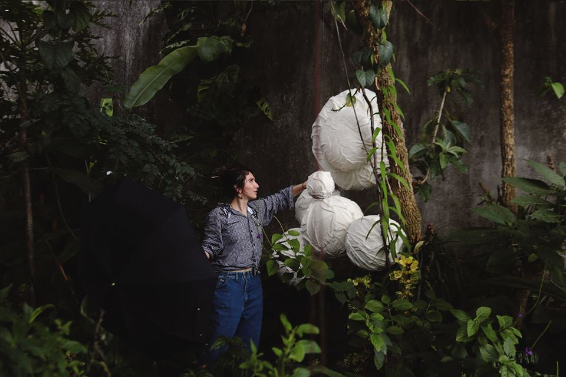

BIO

Daniela Camacho (1992) Nace en Costa Rica y estudia diseño de modas durante 5 años hasta 2014 obteniendo una graduación de honor en la universidad creativa .
Luego expone su trabajo de diseño de moda de autor en galerías del país y posteriormente en Madrid y Ciudad de México .
Continua su formación enfocada a la imagen en diseño grafico y diseño de espacio teatral y performance explorando video arte y collage fotográfico presentados en galerías de la zona.
Paralelamente fusiona ideas en el desarrollo de vestuario para la compañía nacional de teatro de Costa Rica y el festival nacional de las artes .
En 2017 se traslada a la ciudad de Madrid donde se encuentra en búsqueda del desarrollo audiovisual mediando educación de la ECAM y guiando procesos de imagen para proyectos musicales .